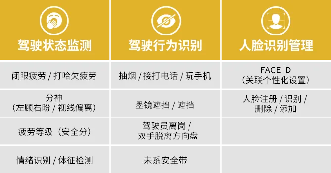
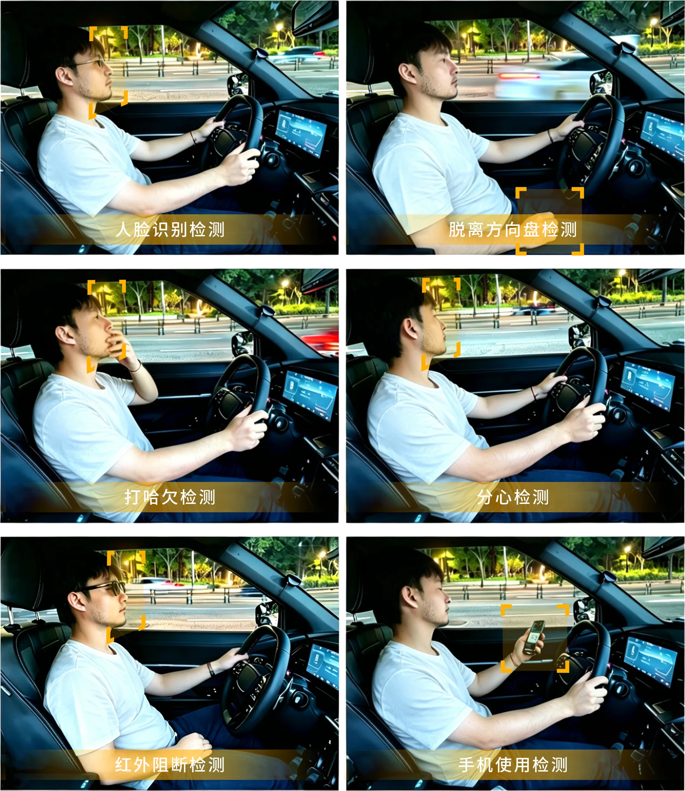

2026年6月1日，公安部發布的《機動車駕駛人疲勞駕駛認定規則》（GA/T2372-2026（以下簡稱“新規”）將在全國統一實施，新規對駕駛員疲勞狀態的認定標準更加細緻，這意味著行業合規升級、搭載分級監測將成為主流趨勢。駕駛狀態監測邁入“精細化”時代，狀態提示功能愈加受到重視，具備疲勞分級提示功能的系統將成為市場優選。
在歐洲等海外市場，DMS早已成為新車准入門檻。寅家科技VT-DMS駕駛員監控系統契合新規趨勢，對標歐盟ADDW/DDAW等功能導向先行佈局，可實現多維度駕駛狀態識別、疲勞層級劃分及適時提醒功能，為行車狀態監測提供專業配套支持。

VT-DMS，為駕駛安全提供分級預警支持
寅家科技VT-DMS駕駛員監控系統，通過實時檢測駕駛員的面部狀態、視線角度、肢體特徵等行為，結合駕駛時間、方向盤操控狀態等，對駕駛員的警覺性進行評估分級，並在需要時通過人機界面向駕駛員提供視覺和聲音警告。

順應全球法規趨勢，打造適配性方案
此前，搭載寅家科技VT-DMS駕駛員監控系統的國際知名品牌汽車，已在西班牙權威認證機構依據歐盟 (EU) 2023/2590號法規的實施細則，完成了(EU)2019/2144（GSR 2.0）法規相關標準的認證。VT-DMS產品符合高級駕駛員分心警告系統（ADDW）、駕駛員疲勞和注意力警告系統（DDAW）以及網絡安全（Cybersecurity）等多項功能要求。
不止疲勞分級，覆蓋多類駕駛行為監測

*具體功能和參數可根據客戶需求定製
不止於硬件，更是軟硬一體的解決方案
攝像頭模組：200萬像素 | 30fps | 紅外940nm夜視增強
檢測精度：精準識別閉眼/哈欠頻率/頭部姿態
環境適應性：工作溫度-40℃~+85℃ | 防護等級IP 52
個性化功能：支持Face ID個性化登錄 | 紅外阻斷型墨鏡遮擋 | 吸菸/打電話/離崗行為檢測

伴隨新規落地與全球汽車法規持續完善，駕駛員狀態監測已成車載配置發展大勢。VT-DMS將以成熟的軟硬件配套能力，通過持續優化智能出行技術和產品，為駕駛員出行提供狀態分級與適時提醒參考，助力車企從容應對新規趨勢，為全球汽車安全領域貢獻更多力量。
*聲明：VT-DMS系統為輔助提示功能，不可替代駕駛員的主觀判斷與安全駕駛行為。